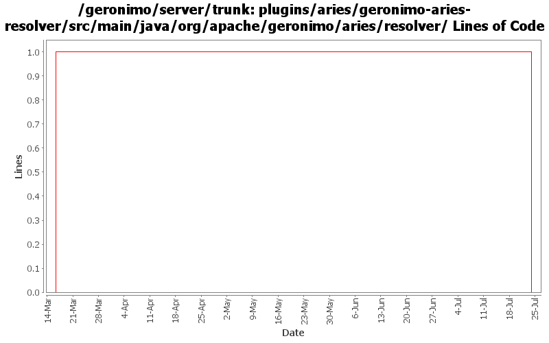

[root]/plugins/aries/geronimo-aries-resolver/src/main/java/org/apache/geronimo/aries/resolver
 generator
(0 files, 0 lines)
generator
(0 files, 0 lines)
 impl
(0 files, 0 lines)
impl
(0 files, 0 lines)

| Author | Changes | Lines of Code | Lines per Change |
|---|---|---|---|
| gawor | 3 (100.0%) | 2 (100.0%) | 0.6 |
switch to obr resolver from apache aries
0 lines of code changed in 1 file:
some more dependencies updates and api updates for aries resolver
1 lines of code changed in 1 file:
GERONIMO-4971: Initial OBR integration for Aries Applications. Some of the OBR resolver code is based on the resolver in Apache Aries
1 lines of code changed in 1 file: